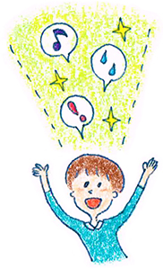

17 : 傾聴トレーニング 普段の会話で自己開示をしていますか？
・傾聴トレーニング ちょっと自分勝手に自己開示

今回のテーマはズバリ「自己開示です」突然ですが、 皆さんは普段「自己開示」をしているでしょうか？
・自分のことをほとんど話さない・・・
・自分から話題を振らない・・・
・浅い話ばかりしてしまう・・・
・話が止まって相手と仲良くなれない・・・
という方は要注意です！
Levingerという学者は関係形成モデル（１９９３）という理論を提唱しました。人間関係は、お互いが自己開示をすることで深まってくという理論です。
人間関係は、お互いの自己開示を等しくしていくことで仲良くなることがでるのです
・自己開示がないと相手は不信を感じる
例えばあなたが
「私の出身は鳥取の倉吉です。とっても自然が豊かで川が綺麗なので心のふるさとなんです。○○さんの出身はどちらですか？」 と話したとします。
これに対して会話の相手が
「出身ですか・・・愛知です・・・（無言）」
と話したとしましょう。これでは自己開示のレベルにギャップが出てしまいます。相手からするととても残念ですね。。 変なことを聞いてしまったのかな？私と話しても楽しくないのかな？
と感じてしまうでしょう。
逆に、会話上手な方は相手の話を一方的に聞くのではなく、 適度に自分の話を織り交ぜながら会話をすることができます。先ほどの例では、 出身の思い出話や、おススメスポットなどを積極的に 自己開示をしていきます
そして、お互い自己開示が進み、「この人は信頼できるなあ~」と親密度が上がっていくのです。自己開示は人間関係を築くための必須の会話の要素なのです。
・自己開示は弾む会話に必須
そこで今回は新しいスキルとして、「自己開示法」を覚えておきましょう。
自己開示法とは、相手の発言に対して、自分の経験や考え方、感情を相手に返す方法です。 コツは過剰な気遣いをせずに、自由に自己開示をするということです。 前回のコラムで勉強したオウム返し、肯定返しは、相手に気遣いをしますが、自己開示はある程度自分勝手に話す！ということが効果的です（理由は後述）
具体例
会話の相手
「先日横浜に行ってきたんです。 アイアンマン3と言う映画を見たのですが、 わかりやすいヒーロー物で、純粋に楽しめました」
自己開示
「へえ～アイアンマン見て満足したみたいだね！
自分はちょっとアクション映画苦手でどちらかというと邦画が好きなんだ。 特に好きなのは北野映画で菊次郎の夏とかまったりしていて好きだよ。 でも○○さんの話を聞いてちょっとアイアンマンみたくなったなあ笑」
いかがでしょうか。こんな形相手の話を受けつつ、適度に自分の好みや考え方を話していくと自然な会話になりやすいのです。多少は自分勝手な会話の展開もアリです。
練習問題
それでは練習問題です！
是非チャレンジしてみてくださいね。
会話の相手が
「結構麻雀好きなんだ。昨日は麻雀大会を開いて12人ぐらいで対戦したよ！かなり自信あって優勝宣言してみたんだけど実際ふた開けてみたら10位！恥かいたわ～」
それではこの発言に対する回答を考えてみましょう。 気遣いはそこそこ！自分の好きな話題で自己開示をしましょう。
↓
考えてみましたか？
↓
それでは自己開示に関する回答例を見てみましょう
回答例
「麻雀かあ・・・みんなで遊ぶのは楽しそうだね。 私は、ちょっと渋めで将棋が好きですね。 小さい頃から将棋をしていて、いまはでは初段を持ってるです。 初段取るの結構大変なんですよ～。今度将棋もしましょうよ♪」
回答例のように、適度な気遣いぐらいに留めて、自分の思うようにお話できたらOKです。
・自分勝手な自己開示がたまには必要な理由
ここまで「自己開示」はある程度自分勝手にしたほうが良いとお伝えしてきました。 ですが、ここで自分勝手に話すなんて、失礼なのではないか？と感じた方もいると思います。 そこで補足として「自分勝手な自己開示の重要性」について説明させて頂きます。
・好かれなきゃ！と考えすぎると疲れる
前回までは相手を立てるためのスキルを学んできました。相手の言葉を言い換えて、返したり、相手の発言の名詞を肯定したり、相手の人間性を肯定したり・・・
共通しているのは相手を肯定すると言う姿勢です。自分の事を肯定されて嫌がる人はまずいません。 いままでお伝えしてきたスキルをしっかりと相手に伝えることができれば、相手から好意を持たれることと考えていいでしょう。 しかし、ここで傾聴の落とし穴が出てきてしまうのです。それは「気遣い疲れ」です。
あまりにも「相手から好かれよう」と考え続けていると、神経を使いすぎて、とても疲れてしまうと言うデメリットが出てきてしまうのです。 相手に合わせなきゃ！楽しんでもらわなくちゃ！と考え続けるのはとてもエネルギーが必要です。結果的に神経を使い過ぎて会話そのものが嫌になってしまったら元も子もありませんよね。。必要以上に相手に対して気遣いしすぎず、自分勝手さを持つことが結果的にお互いの楽しい会話に繋がるのです。
・たまにはKYでもOK
コミュニケーションはお互いさまです。 たまには自分自身が気持ちよくなれるような会話の仕方も覚えておかないと身が持たないのですね。 そのため私は講座の中でもたまにはKYでもOKと生徒さんにお伝えします。むしろKYな発言をしてくださいっ！と半分冗談、半分本気でお伝えしています。
KYな発言をしなさいっ！なんて講師としてどうかと思うのですが、コミュニケーションにおいては自由がないと息が詰まって疲れ果ててしまうのです。
会話は相手のためだけではなく、自分のためでもあります。傾聴といえどもどこかで自分自身が楽しむという意識を持つために自分らしく自己開示をしてみましょう♪
＊関係形成モデル 出典 Derlega，V.J.， Metts，S.， Petronio，S.， & Margulis，S.T. 1993 Sell-disclosure. Sage.
 |
|